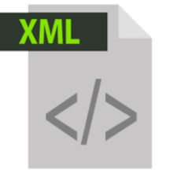

Quando surgiu o XML?
A partir da criação da GML, a IBM conseguiu fazer a classificação e processamento de todos os documentosos de maneira rápida. Em 1986, a ISO1 (organização internacional para padronização), trabalhou na padronização desta linguagem. Neste instante, foi criada a SGML (Standard Generalized Markup Language), que era a mesma GML, porém, padronizada. Sendo a SMGL uma linguagem eficaz, bastante adaptável.
Em 1989, foi criado pelo britânico Tim Berners-Lee, o HTML (Hypertext Markup Language). Linguagem de marcação criada para a construção de páginas em um site. A HTML foi derivada da SGML. Utiliza-se um conjunto de tags que determinarão a função de cada elemento. |
 |
|
|  | Quando a XML foi fundada, pensou-se que o propósito da XML seria de substituição da HTML, porém, este pensamento logo mudou, visto que a XML foi proposta com o objetivo de suprir as limitações da HTML, complementando-as. |
|
|